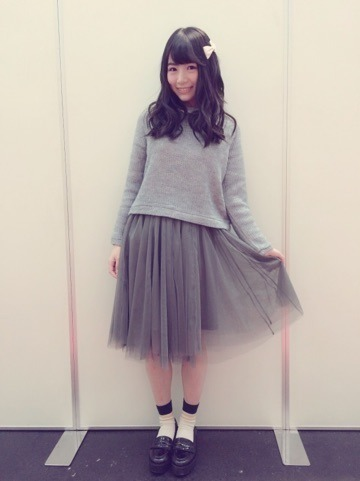

2014/1229Mon声をひそめ君と
みなさまこんばんわ！
日奈子だよー٩(◦`꒳´◦)۶♪
昨日は京都で今年最後の個別握手会でした！！！
握手会は、またすぐにあるんだけど
今年最後っていう言葉のせいで
すごく寂しく感じたなー。。。
1部からたくさんの方が会いに来てくださり、とても嬉しかったです！！！
1部が、灰色ネットのトップスに
灰色のチュールスカート♪

髪型がゆる巻きに白いリボンのバレッタつけたよー！

それからそれから、
井上さんと洋服が似ていたから
一緒に写真とってもらったの♡
日奈子:井上さんポーズ決めてください！
井上さん:え～きいちゃん決めて～！
日奈子と井上さん:えへへへへへへ笑
っていう会話をしてから2枚とりました！
1枚はがおー！

2枚目が、よくわからないポーズ笑
うきうきしてたら、このポーズになった♪笑
井上さんのブログ読みました♡
井上さんは、おしとやかで静かなイメージだったけど、
新たな発見で壊れる事がわかった10枚目期間でした(｡・・｡)♡
その、壊れてる時が、
クソガキみたいでね、
日奈子みたいなの♪笑
だから、同じテンションでふざけ合えるのは伊織とみり愛しかいなかったけど
井上さんもだった♡
最近井上さん見かける度に、
井上さんってあれですよね～( ˘･з･)
あのー、
クソガキっぽいですよね～(￣ｍ￣〃)♪
って、言いに行くの♪
井上さんが、もーーーー！って言ってる時、すっごく可愛くて
ついついちょっかい出したくなる♡
最近推しメンになりつつあるなんて、言われたら、次から会う時照れちゃって
もっとちょっかい出しちゃいそう。。。♡
今度、また一緒に写真撮ってもらお～♪
きっと、やだ～って言われちゃうけど♡
2部が、お母さんと前に買いに行った
カーディガンとスカート！
全身は忘れちゃった。。。
髪の毛がゆる巻きハーフアップに
後ろに赤いリボンのバレッタつけてるよ！
3部が、黒いタートルネックのニットに
短パン！！！
短パンじゃなくて、こういうズボンのこともっとかっこいい言い方で何て言うんだっけ？。。。
わからない。。。
でも、ジーンズ生地の短パン！ほら、よくあるやつ！

エア握手♪
今回は塩じゃないよ♪
ポーズに困った時の
ぐーちょきぱー技の
ちょき！！！
ピースじゃないよ！

それから、ほら！
ここに赤いリボン結んだの！
みんな、握手会中気づいてなかった～
٩(๑`^´๑)۶
髪型は、サイドポニーテールかな？
高い位置でポニーテールして
髪の毛の3分の1を頭の横に
ピンで留めて横にもってきた！
生写真でも、この髪型1枚だけしたから楽しみにしててね♪

日奈子とあっしゅんの
いちゃらぶを間近でみた
まい姉さん
あ、年明け用に
まいちゅんにイカとかこまいとか
おつまみあげたら
喜んでくれた♡
握手会本当にありがとうございました！
はじめて来てくださった方もたくさんで嬉しかったです♡
今年最後の締めくくりとして
1年を一緒に振り返った方が多かったですね♪
いろいろな、反省がありますね。。。
それは、また31日に更新するブログで。。。
お知らせです！
2015新年号 FLASHスペシャル
「U-18美少女名鑑」に、載らせて頂いています！
手書きアンケートや、私服で撮影したので是非チェックしてください♡
それから、2月9日に発売されるUTB+さんに、
七瀬さんと一緒に載らせて頂きます！
七瀬さんの連載コーナーの、
七瀬さんがカメラマンになってメンバーを撮るという企画で
七瀬さんに、いっぱい撮ってもらいました♡
私を撮って下さる七瀬さんが、可愛くて途中で日奈子が七瀬さんを撮っちゃった(｡・・｡)♪
また、近くになったら報告します♪
オフショットはやく載せたいよ～♪
とても、楽しい撮影でした٩(◦`꒳´◦)۶
あやねちゃん
きいちゃん見てみて～ダンス上手くなったの～、一緒に踊ろう♪って言ってくるあやねが愛おしいです。

みり愛は、日奈子のベイマックス。
2014/12/29 23:36


コメント(432)
明日たのしもー♪
たのしみ！
のぎ天に欠かせない存在になりつつあるな。頑張れぃ
ほなまた〜
来年はきいちゃん自身もグループ全体も飛躍していこうね！
絵梨花さんと2sはよぉｗｗｗ
握手会楽しみにしてるね！
名古屋でみなみレーンとひたすらループしてた人です笑
明日感謝祭昼行くよー！頑張ってね
あしたの昼入る！6列目できいちゃん達からみて左にいるから見つけて♡投げチューまってまーす«٩(*´ ꒳ `*)۶»
れいぴよ
エクステ付けてるの見慣れてきた！
かわいい笑
怪力じゃないみたいだなー
握手会券とるかも！
来年の1月2月の
感謝祭行くよー！
いろいろあるみたいで楽しみー！
明日の感謝祭頑張れー！
京都は行けなかったけどその分名古屋とっても楽しかった(b・ω・d)イｪｧ♪
明日は感謝祭だね！
頑張ってね♪。.:＊・゜
愛知から応援送ってる( -`ω-)b
では、おやすみヽ(*´∀｀)ノ
ひなこ(=ﾟωﾟ)ﾉ♡
京都行きたかったよー(つД`)ノ
明日の大感謝祭行くよん♪♪
今年最後の乃木坂だ(((o(*ﾟ▽ﾟ*)o)))
楽しみー(*^^*)
きいちゃんかわいすぎ。
京都まで握手行きたかったけどお金が…笑
今度はお金ためて行くね！笑
明日の感謝祭頑張って！＼(^o^)／
ほんとに、幸せだったんだからね笑
ちゃんと覚えといてよ！
さて、俺は次はいつ現れるかな？？
またね！
初コメです！いつもいつも元気いっぱいな笑顔にパワーもらってます！
来年もきいちゃんパワーよろしくお願いします！
来年は握手行くしか*\(^o^)/*
その前に感謝祭楽しみー( ^ω^ )
早く寝るしか(._.)
ばーい(u_u)
どうもバスケットマンです！
ハイペース更新！！
ありがとー
実はさっき前のブログにコメントしようとしたばっかりなんだ！
なんて偶然だー！
またすぐコメント書くねー
さゆちゃんと仲良くなれて良かったね。
笑ったwww
れいぴよ
握手会お疲れ様〜(^○^)
握手会おつかれさま♪
きいちゃんのロングもまた似合ってるねぇ( ﾟAﾟ )
生で見たいよぉ～
あんまりさゆにゃんと仲良くしてたら飛鳥がやきもちやいちゃうぞヽ(｀ω´)ﾉ
昨日行ったよ♪
３部の髪型が1番好き♡
まぁ全部かわいいけど…笑
握手会の日にブログ
あげる言うてたのに〜笑笑笑
今年もきいちゃんのおかげで
楽しい1年になりました！！
来年も頑張ってね♪
んなまたコメントするわ(=ﾟωﾟ)ﾉ
byあすと
握手会楽しめたかな？
さゆにゃんとの写真めっちゃ可愛い！
好きな2人だからめっちゃ嬉しいよー！
今年もあと少しだけど体調に気をつけてがんばろー！
きいちゃん大好きやー！
明日昼夜行くね～!щ(゜▽゜щ)
ポニーテールが特に好き♡
京都の握手会行きたかったです( ˃ ⌑ ˂ഃ )
ふじもんとの連番楽しかったなぁー
ふじもんとれなてんと３人でいきたいな～
楽しかったよー
またいくねっ
さゆにゃんもいじるようになったかーー笑
きいちゃんの一期生いじり好き！
どんどんいじっていこう！！
あとどんどん馬鹿らしくばか騒ぎしていこう！笑
どうでもいいけどミスチルのライブ当たりました
あやねちゃんと一緒にダンス頑張ってね＼(^o^)／
来年もよろしくね。
あしたは、大感謝祭いくよー。
前から7列目。
きいちゃんに、ちかーいって言われたしね。
またねー！
ポニーテール可愛い…♡
ジーパンの短いのって
ショーパンのことかなwww
ゆる巻きハーフアップ可愛い
あれだね、確かにさゆにゃんは実年齢より幼い感じだけど、きいちゃんも人のこと言えないよ？笑
明日昼の方行くよ！でもね、( ﾟдﾟ)がキンブレ買いたいとか言いやがって早めに出ることになりました（笑）
ってことでそろそろ寝ます、おやすみ〜
ロング似合ってるよ〜ゆる巻きハーフアップ最高だよ〜←その髪型めっちゃ好き
握手会お疲れ様〜
あともう少しで2015年だよー新年だよー未年だよー(メェ〜)
髪が長くなって、色々な髪型で遊んでるね！
楽しそうでなによりです
今年最後の握手会は参加出来なかったけど、
来年のスペ握は行けるので今から楽しみ！！
その頃にはいつもの髪長さに戻ってるかな？
今日も１日、日奈子日和でした((o(^∇^)o))
来年も応援してます！とりまロング好き♡
なんで握手内容でラッスンゴレライ楽しかったって書いてくれないんですか！
次良かったら振り返ってください笑笑笑笑(*^^*)
もしくはモバメでラッスンゴレライ送ってください！！
お願いします٩꒰ ˘ ³˘꒱۶~♡
私信くださいw
日奈子さんと握手楽しかった！
日奈子は握手楽しかった？
日奈子が楽しんでくれたなら幸いです！♡
1年間ありがとね♡
来年もよろしくね！♡
ふじもんより。
コメントする